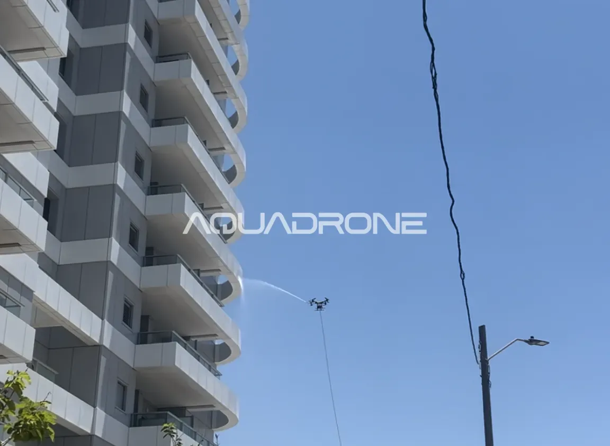

11/07/26
ניקוי אזורים ללא גישה במבנים – הפתרון שסוף סוף מגיע לכל מקום
ניקוי אזורים ללא גישה הוא אחד האתגרים הנפוצים ביותר בתחזוקת מבנים — ולמרבה האירוניה, דווקא באזורים האלה מצטבר הכי הרבה לכלוך, כי הם כמעט אף פעם לא מטופלים כראוי. פינות עליונות, שקעים בין אגפי מבנה, אזורים מעל גגות משופעים או מתחת לקורות בליטה — כל אלה נשארים לרוב "מחוץ לתמונה" גם אחרי ניקוי חזית מלא.
למה יש בכלל אזורים ללא גישה במבנים?
מבנים מודרניים כוללים לעיתים קרובות גיאומטריה מורכבת: זוויות פנימיות, מרפסות בולטות, שקעי אוורור, שטחים בין שני אגפים צמודים, וגגות בגבהים משתנים. שיטות ניקוי מסורתיות — פיגומים, סנפלינג, או מוטות ניקוי מהקרקע — פשוט לא בנויות להגיע לכל הזוויות האלה בבטחה או ביעילות. התוצאה: הצוות מנקה את מה שנגיש, ומדלג על השאר.
מה הבעיה בהזנחת אזורים ללא גישה?
הזנחה מתמשכת של פינות בלתי נגישות לא נשארת רק בעיה אסתטית:
- הצטברות לכלוך מואצת — אזורים מוצלים ובלתי נגישים נוטים לפתח עובש ולכלוך ביולוגי מהר יותר, בדיוק בגלל שהם לא נחשפים לניקוי סדיר
- הסתרת נזק מבני — סדקים או נזילות באזורים נסתרים מתגלים לרוב רק כשהנזק כבר משמעותי, בדומה להמלצות משרד הבינוי והשיכון בנוגע לבדיקות תקופתיות של מעטפת המבנה
- מראה כללי לא אחיד — גם אם רוב החזית נקייה, פינה מוזנחת אחת בולטת לעין ופוגעת ברושם הכללי
איך ניקוי אזורים ללא גישה בעזרת רחפן פותר את הבעיה?
גישה תלת-ממדית אמיתית — רחפן לא מוגבל לזווית עבודה אחת כמו פיגום או סנפלינג. הוא יכול לתמרן סביב פינות, מתחת לבליטות, ובין אגפי מבנה צמודים — בדיוק המקומות שנשארים תמיד "מחוץ לתמונה".
זיהוי מדויק באמצעות צילום בזמן אמת — טכנולוגיית צילום 4K ובינה מלאכותית מאפשרת לאתר בדיוק היכן מצטבר לכלוך גם באזורים שקשה לראות אותם בעין בלתי מזוינת מהקרקע.
ריסוס ושטיפה ממוקדים — במקום לדלג על אזור בעייתי, מערכת ההתזה מטפלת בו ישירות, כולל שטיפה סופית במים מסוננים שמונעת סימני טיפות גם בזוויות הקשות ביותר.
ללא סיכון לצוות — אזורים בלתי נגישים הם לרוב גם המסוכנים ביותר לטיפוס אליהם פיזית. ניקוי מהאוויר מבטל את הסיכון הזה לחלוטין.
אילו אזורים נחשבים "ללא גישה" בדרך כלל?
פינות פנימיות בין אגפי מבנה, שקעי אוורור וגומחות, אזורים מתחת לקורות ולבליטות אדריכליות, גגות משופעים וגגות ביניים, ומרווחים צרים בין מבנים סמוכים.
מי צריך לשים לב לזה במיוחד?
מבנים עם אדריכלות מורכבת או לא סטנדרטית, מבנים היסטוריים או ישנים עם תוספות בנייה לאורך השנים, ומבנים צמודי דופן שבהם המרווח בין המבנים כמעט ולא נגיש לציוד ניקוי רגיל. אפשר לקרוא עוד על שיטת העבודה המלאה שלנו ואיך היא מתמודדת עם מבנים מורכבים.
סיכום
ניקוי אזורים ללא גישה הוא בדיוק המקום שבו שיטות ניקוי מסורתיות נכשלות באופן שיטתי — לא בגלל חוסר מקצועיות, אלא בגלל מגבלה פיזית אמיתית של הציוד. ניקוי בעזרת רחפן פותר את הבעיה מהשורש, ומבטיח שאין יותר "פינות נשכחות" בחזית המבנה שלכם.
מזהים אזורים בחזית שאף אחד לא מצליח לנקות? צרו קשר לסקר אתר ראשוני ללא התחייבות.